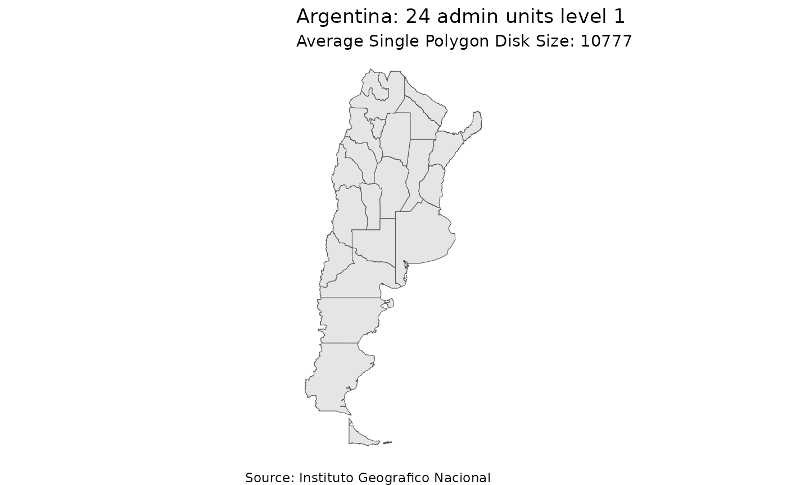
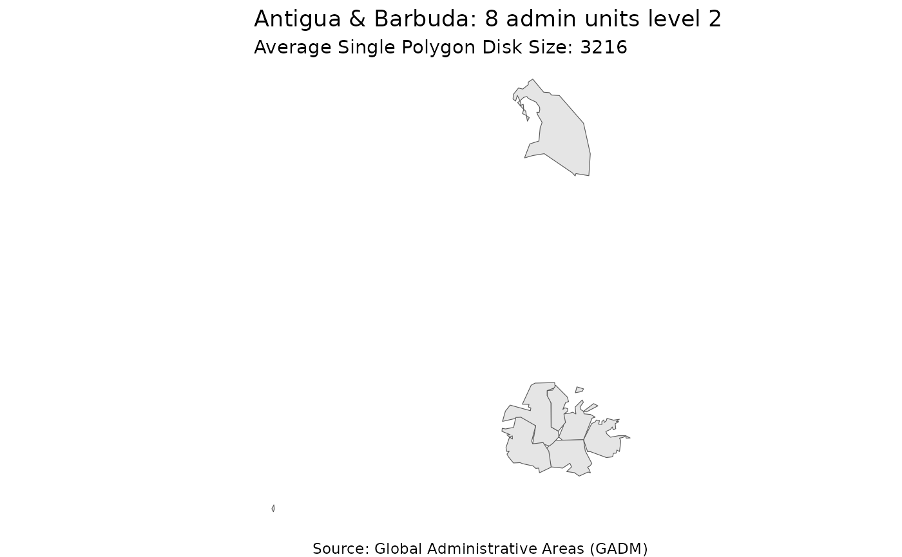
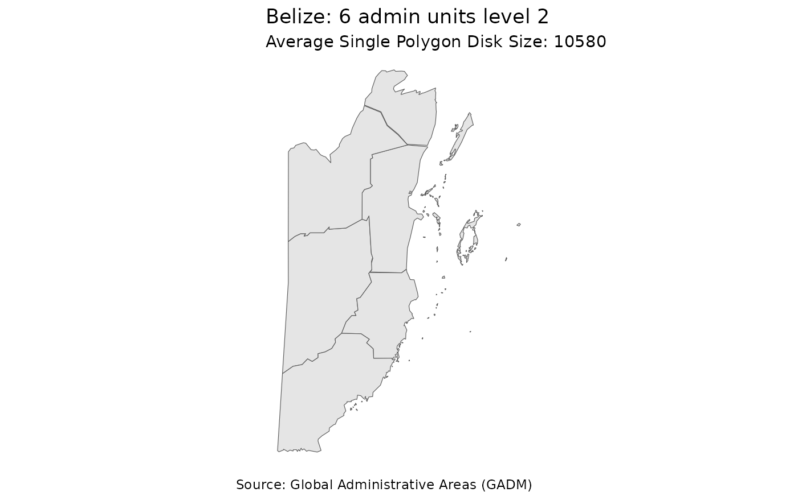
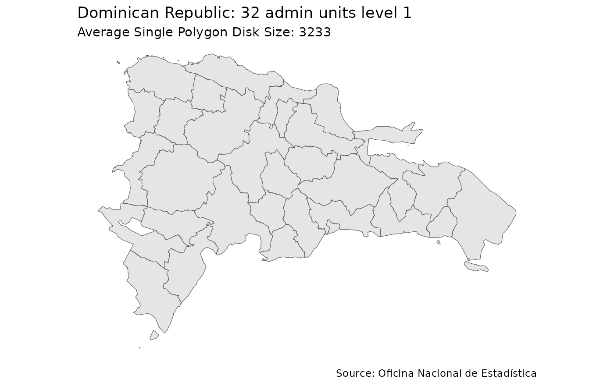
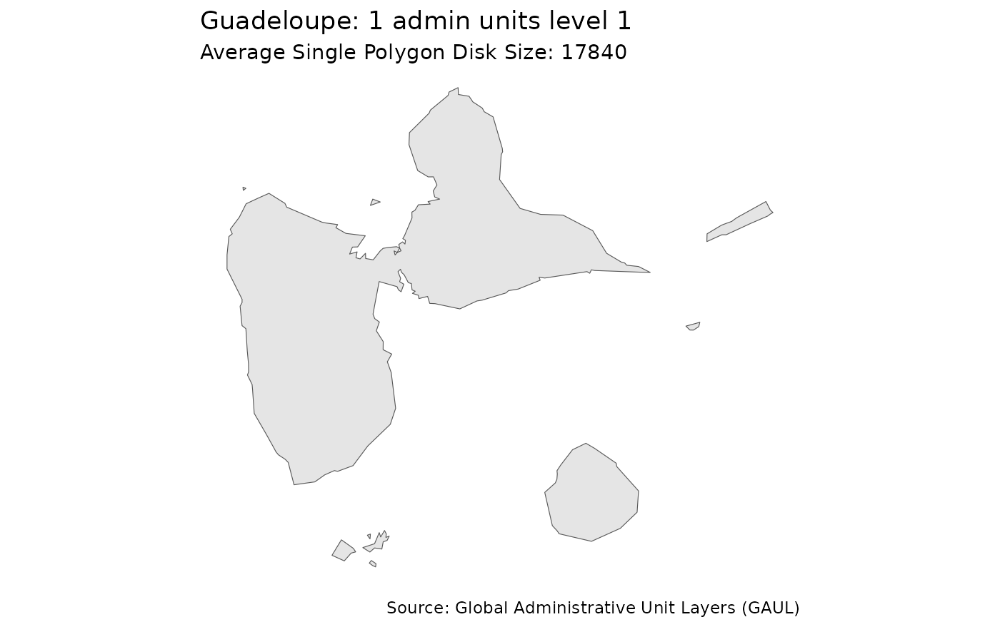
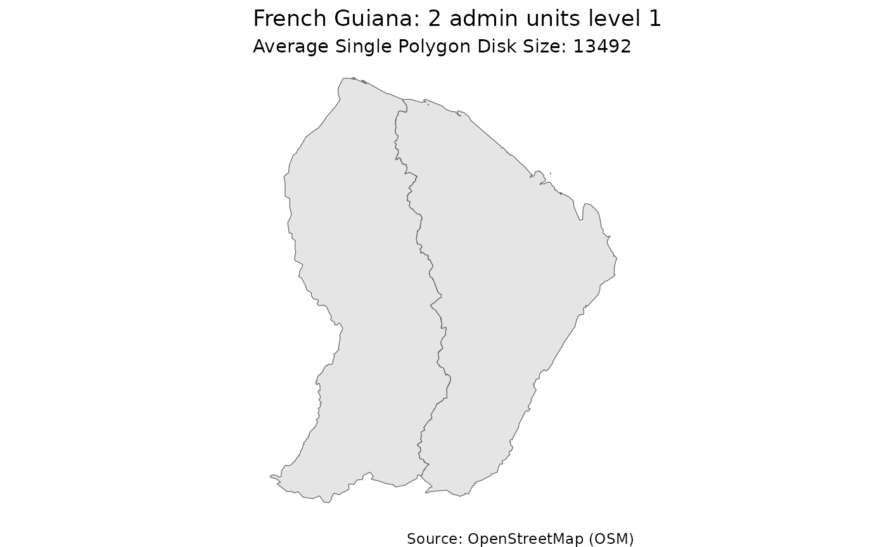
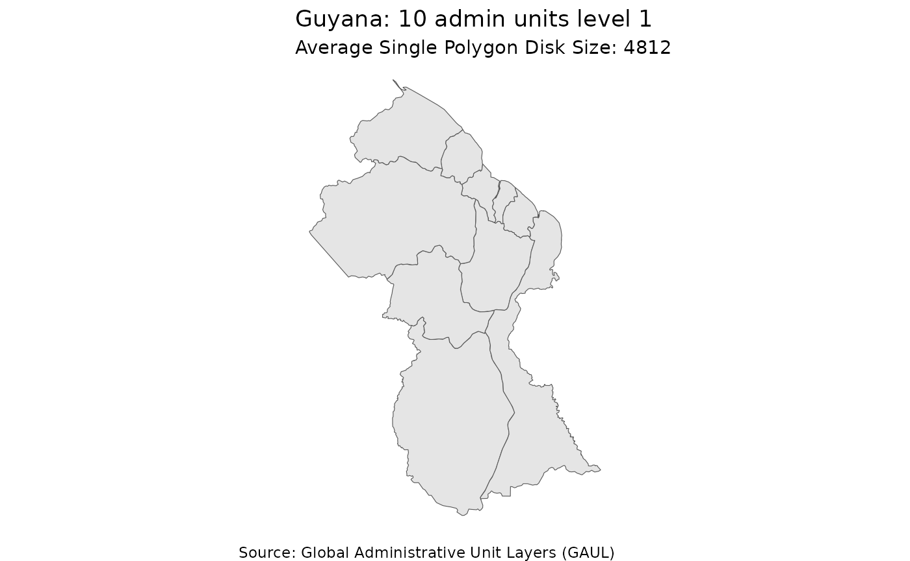

Get started
get-started.Rmd
library(admin2check)f_get_admin2_boundaries
## The test is actually the QA process!
library(countrycode)
ctr <- countrycode::codelist |>
dplyr::filter( ! is.na(iso3c) ) |>
dplyr::filter(continent == "Americas" ) |>
dplyr::select(country.name.en, iso3c)
ctr
#> # A tibble: 55 × 2
#> country.name.en iso3c
#> <chr> <chr>
#> 1 Anguilla AIA
#> 2 Antigua & Barbuda ATG
#> 3 Argentina ARG
#> 4 Aruba ABW
#> 5 Bahamas BHS
#> 6 Barbados BRB
#> 7 Belize BLZ
#> 8 Bermuda BMU
#> 9 Bolivia BOL
#> 10 Brazil BRA
#> # ℹ 45 more rows
ctr <- ctr |>
dplyr::select(iso3c) |>
dplyr::pull()
# BRA <- f_get_admin2_boundaries(ISO3 = "BRA", simplify = TRUE, dTolerance = 500)
# ECU <- f_get_admin2_boundaries(ISO3 = "ECU", simplify = TRUE, dTolerance = 500)
# GTM <- f_get_admin2_boundaries(ISO3 = "GTM", simplify = TRUE, dTolerance = 500)
# CRI <- f_get_admin2_boundaries(ISO3 = "CRI", simplify = TRUE, dTolerance = 500)
# CHL <- f_get_admin2_boundaries(ISO3 = "CHL", simplify = TRUE, dTolerance = 500)
# COL <- f_get_admin2_boundaries(ISO3 = "COL", simplify = TRUE, dTolerance = 500)
# MEX <- f_get_admin2_boundaries(ISO3 = "MEX", simplify = TRUE, dTolerance = 500)
for ( code in ctr )
{ #cat (paste0(code,"\n"))
t <- f_get_admin2_boundaries(ISO3 = code, simplify = TRUE, dTolerance = 500) }
#> Trying to get data for Anguilla.#> Warning in rm(df_geom): object 'df_geom' not found
#> Geometry size for AIA is 56696......
#> Simplified Geometry size for AIA is 13080 aka 23.07% .....
#> Trying to get data for Antigua & Barbuda.#> Warning in rm(df_geom): object 'df_geom' not found
#> Geometry size for ATG is 156248......
#> 7 duplicate in adm2_source_code for: ATG
#> Simplified Geometry size for ATG is 25728 aka 16.47% .....#> Trying to get data for Argentina.#> Warning in rm(df_geom): object 'df_geom' not found
#> Geometry size for ARG is 27475360......
#> 81 duplicate in gis_name for: ARG
#> Simplified Geometry size for ARG is 1235984 aka 4.5% .....#> Trying to get data for Aruba.#> Warning in rm(df_geom): object 'df_geom' not found
#> Geometry size for ABW is 388848......
#> Simplified Geometry size for ABW is 11560 aka 2.97% .....#> Trying to get data for Bahamas.#> Warning in rm(df_geom): object 'df_geom' not found
#> Geometry size for BHS is 4799648......
#> Simplified Geometry size for BHS is 291208 aka 6.07% .....#> Trying to get data for Barbados.#> Warning in rm(df_geom): object 'df_geom' not found
#> Geometry size for BRB is 69328......
#> Simplified Geometry size for BRB is 25008 aka 36.07% .....#> Trying to get data for Belize.#> Warning in rm(df_geom): object 'df_geom' not found
#> Geometry size for BLZ is 815536......
#> 5 duplicate in adm2_source_code for: BLZ
#> Simplified Geometry size for BLZ is 63480 aka 7.78% .....
#> Trying to get data for Bermuda.#> Warning in rm(df_geom): object 'df_geom' not found
#> Geometry size for BMU is 130648......
#> Simplified Geometry size for BMU is 27288 aka 20.89% .....
#> Trying to get data for Bolivia.#> Warning in rm(df_geom): object 'df_geom' not found
#> Geometry size for BOL is 8556568......
#> 3 duplicate in gis_name for: BOL
#> Simplified Geometry size for BOL is 461320 aka 5.39% .....#> Trying to get data for Brazil.
#> Warning in rm(df_geom): object 'df_geom' not found
#> An Error Occurred
#> Trying to get data for British Virgin Islands.#> Warning in rm(df_geom): object 'df_geom' not found
#> Geometry size for VGB is 148144......
#> Simplified Geometry size for VGB is 25240 aka 17.04% .....#> Trying to get data for Canada.
#> Warning in rm(df_geom): object 'df_geom' not found
#> An Error Occurred
#> Trying to get data for Caribbean Netherlands.#> Warning in rm(df_geom): object 'df_geom' not found
#> Geometry size for BES is 104592......
#> Simplified Geometry size for BES is 15128 aka 14.46% .....#> Trying to get data for Cayman Islands.#> Warning in rm(df_geom): object 'df_geom' not found
#> Geometry size for CYM is 102824......
#> Simplified Geometry size for CYM is 19904 aka 19.36% .....#> Trying to get data for Chile.
#> Warning in rm(df_geom): object 'df_geom' not found
#> An Error Occurred
#> Trying to get data for Colombia.
#> Warning in rm(df_geom): object 'df_geom' not found
#> An Error Occurred
#> Trying to get data for Costa Rica.#> Warning in rm(df_geom): object 'df_geom' not found
#> Geometry size for CRI is 3038848......
#> 61 duplicate in adm2_source_code for: CRI
#> Simplified Geometry size for CRI is 172848 aka 5.69% .....#> Trying to get data for Cuba.#> Warning in rm(df_geom): object 'df_geom' not found
#> Geometry size for CUB is 2725288......
#> 1 duplicate in gis_name for: CUB
#> An Error Occurred during geometry simplification
#> <simpleError in wk_handle.wk_wkb(wkb, s2_geography_writer(oriented = oriented, check = check, tessellate_tol = if (planar) { tessellate_tol_m/s2_earth_radius_meters() } else { Inf })): Loop 0 is not valid: Edge 1295 has duplicate vertex with edge 1302>
#> Trying to get data for Curaçao.#> Warning in rm(df_geom): object 'df_geom' not found
#> Geometry size for CUW is 101752......
#> Simplified Geometry size for CUW is 15088 aka 14.83% .....#> Trying to get data for Dominica.#> Warning in rm(df_geom): object 'df_geom' not found
#> Geometry size for DMA is 101736......
#> Simplified Geometry size for DMA is 25256 aka 24.83% .....#> Trying to get data for Dominican Republic.#> Warning in rm(df_geom): object 'df_geom' not found
#> Geometry size for DOM is 7343400......
#> An Error Occurred during geometry simplification#> <simpleError in wk_handle.wk_wkb(wkb, s2_geography_writer(oriented = oriented, check = check, tessellate_tol = if (planar) { tessellate_tol_m/s2_earth_radius_meters() } else { Inf })): Loop 0 is not valid: Edge 2311 has duplicate vertex with edge 2314>
#> Trying to get data for Ecuador.#> Warning in rm(df_geom): object 'df_geom' not found
#> Geometry size for ECU is 18411464......
#> 2 duplicate in gis_name for: ECU
#> An Error Occurred during geometry simplification#> <simpleError in wk_handle.wk_wkb(wkb, s2_geography_writer(oriented = oriented, check = check, tessellate_tol = if (planar) { tessellate_tol_m/s2_earth_radius_meters() } else { Inf })): Loop 0 is not valid: Edge 13759 has duplicate vertex with edge 13762>
#> Trying to get data for El Salvador.#> Warning in rm(df_geom): object 'df_geom' not found
#> Geometry size for SLV is 5429928......
#> 6 duplicate in gis_name for: SLV
#> Simplified Geometry size for SLV is 394784 aka 7.27% .....
#> Trying to get data for Falkland Islands.#> Warning in rm(df_geom): object 'df_geom' not found
#> Geometry size for FLK is 5960......
#> Simplified Geometry size for FLK is 5792 aka 97.18% .....#> Trying to get data for French Guiana.#> Warning in rm(df_geom): object 'df_geom' not found
#> Geometry size for GUF is 1296096......
#> Simplified Geometry size for GUF is 80480 aka 6.21% .....#> Trying to get data for Greenland.#> Warning in rm(df_geom): object 'df_geom' not found
#> Geometry size for GRL is 18526216......
#> Warning in f_get_admin2_boundaries(ISO3 = code, simplify = TRUE, dTolerance = 500): NAs found in adm2_source_code for: GRL
#> 4 duplicate in adm2_source_code for: GRL
#> Simplified Geometry size for GRL is 1125176 aka 6.07% .....#> Trying to get data for Grenada.#> Warning in rm(df_geom): object 'df_geom' not found
#> Geometry size for GRD is 126656......
#> 6 duplicate in adm2_source_code for: GRD
#> Simplified Geometry size for GRD is 24416 aka 19.28% .....#> Trying to get data for Guadeloupe.#> Warning in rm(df_geom): object 'df_geom' not found
#> Geometry size for GLP is 771888......
#> Simplified Geometry size for GLP is 21072 aka 2.73% .....#> Trying to get data for Guatemala.#> Warning in rm(df_geom): object 'df_geom' not found
#> Geometry size for GTM is 2194384......
#> 6 duplicate in gis_name for: GTM
#> Simplified Geometry size for GTM is 557272 aka 25.4% .....#> Trying to get data for Guyana.#> Warning in rm(df_geom): object 'df_geom' not found
#> Geometry size for GUY is 275296......
#> Simplified Geometry size for GUY is 77328 aka 28.09% .....#> Trying to get data for Haiti.#> Warning in rm(df_geom): object 'df_geom' not found
#> Geometry size for HTI is 1017744......
#> An Error Occurred during geometry simplification#> <simpleError in wk_handle.wk_wkb(wkb, s2_geography_writer(oriented = oriented, check = check, tessellate_tol = if (planar) { tessellate_tol_m/s2_earth_radius_meters() } else { Inf })): Loop 0 is not valid: Edge 644 has duplicate vertex with edge 647>
#> Trying to get data for Honduras.
#> Warning in rm(df_geom): object 'df_geom' not found
#> An Error Occurred
#> Trying to get data for Jamaica.#> Warning in rm(df_geom): object 'df_geom' not found
#> Geometry size for JAM is 272808......
#> Simplified Geometry size for JAM is 39176 aka 14.36% .....#> Trying to get data for Martinique.#> Warning in rm(df_geom): object 'df_geom' not found
#> Geometry size for MTQ is 120208......
#> Simplified Geometry size for MTQ is 57200 aka 47.58% .....#> Trying to get data for Mexico.
#> Warning in rm(df_geom): object 'df_geom' not found
#> An Error Occurred
#> Trying to get data for Montserrat.#> Warning in rm(df_geom): object 'df_geom' not found
#> Geometry size for MSR is 5960......
#> Simplified Geometry size for MSR is 5792 aka 97.18% .....#> Trying to get data for Nicaragua.#> Warning in rm(df_geom): object 'df_geom' not found
#> Geometry size for NIC is 6610840......
#> Simplified Geometry size for NIC is 314528 aka 4.76% .....#> Trying to get data for Panama.#> Warning in rm(df_geom): object 'df_geom' not found
#> Geometry size for PAN is 3632744......
#> An Error Occurred during geometry simplification#> <simpleError in wk_handle.wk_wkb(wkb, s2_geography_writer(oriented = oriented, check = check, tessellate_tol = if (planar) { tessellate_tol_m/s2_earth_radius_meters() } else { Inf })): Loop 0 is not valid: Edge 90 has duplicate vertex with edge 93>
#> Trying to get data for Paraguay.#> Warning in rm(df_geom): object 'df_geom' not found
#> Geometry size for PRY is 16888248......
#> 1 duplicate in gis_name for: PRY
#> Simplified Geometry size for PRY is 543488 aka 3.22% .....#> Trying to get data for Peru.#> Warning in rm(df_geom): object 'df_geom' not found
#> Geometry size for PER is 11357328......
#> An Error Occurred during geometry simplification#> <simpleError in wk_handle.wk_wkb(wkb, s2_geography_writer(oriented = oriented, check = check, tessellate_tol = if (planar) { tessellate_tol_m/s2_earth_radius_meters() } else { Inf })): Loop 0 is not valid: Edge 2 has duplicate vertex with edge 8478>
#> Trying to get data for Puerto Rico.#> Warning in rm(df_geom): object 'df_geom' not found
#> Geometry size for PRI is 5960......
#> Simplified Geometry size for PRI is 5792 aka 97.18% .....
#> Trying to get data for Saint Martin (French part).#> Warning in rm(df_geom): object 'df_geom' not found
#> Geometry size for MAF is 5960......
#> Simplified Geometry size for MAF is 5792 aka 97.18% .....#> Trying to get data for Sint Maarten.#> Warning in rm(df_geom): object 'df_geom' not found
#> Geometry size for SXM is 5960......
#> Simplified Geometry size for SXM is 5792 aka 97.18% .....#> Trying to get data for St. Barthélemy.#> Warning in rm(df_geom): object 'df_geom' not found
#> Geometry size for BLM is 5960......
#> Simplified Geometry size for BLM is 5792 aka 97.18% .....#> Trying to get data for St. Kitts & Nevis.#> Warning in rm(df_geom): object 'df_geom' not found
#> Geometry size for KNA is 98888......
#> Simplified Geometry size for KNA is 28808 aka 29.13% .....
#> Trying to get data for St. Lucia.#> Warning in rm(df_geom): object 'df_geom' not found
#> Geometry size for LCA is 107488......
#> Simplified Geometry size for LCA is 26048 aka 24.23% .....#> Trying to get data for St. Pierre & Miquelon.#> Warning in rm(df_geom): object 'df_geom' not found
#> Geometry size for SPM is 5960......
#> Simplified Geometry size for SPM is 5792 aka 97.18% .....#> Trying to get data for St. Vincent & Grenadines.#> Warning in rm(df_geom): object 'df_geom' not found
#> Geometry size for VCT is 115888......
#> Simplified Geometry size for VCT is 22840 aka 19.71% .....#> Trying to get data for Suriname.#> Warning in rm(df_geom): object 'df_geom' not found
#> Geometry size for SUR is 479272......
#> 2 duplicate in gis_name for: SUR
#> Simplified Geometry size for SUR is 126544 aka 26.4% .....#> Trying to get data for Trinidad & Tobago.#> Warning in rm(df_geom): object 'df_geom' not found
#> Geometry size for TTO is 370032......
#> 14 duplicate in adm2_source_code for: TTO
#> Simplified Geometry size for TTO is 38808 aka 10.49% .....#> Trying to get data for Turks & Caicos Islands.#> Warning in rm(df_geom): object 'df_geom' not found
#> Geometry size for TCA is 5960......
#> Simplified Geometry size for TCA is 5792 aka 97.18% .....
#> Trying to get data for U.S. Virgin Islands.#> Warning in rm(df_geom): object 'df_geom' not found
#> Geometry size for VIR is 5960......
#> Simplified Geometry size for VIR is 5792 aka 97.18% .....#> Trying to get data for United States.#> Warning in rm(df_geom): object 'df_geom' not found
#> Geometry size for USA is 4486216......
#> 1309 duplicate in gis_name for: USA
#> Simplified Geometry size for USA is 4374648 aka 97.51% .....
#> Trying to get data for Uruguay.#> Warning in rm(df_geom): object 'df_geom' not found
#> Geometry size for URY is 1214880......
#> Simplified Geometry size for URY is 353248 aka 29.08% .....#> Trying to get data for Venezuela.#> Warning in rm(df_geom): object 'df_geom' not found
#> Geometry size for VEN is 10678984......
#> 62 duplicate in gis_name for: VEN
#> Simplified Geometry size for VEN is 753152 aka 7.05% .....